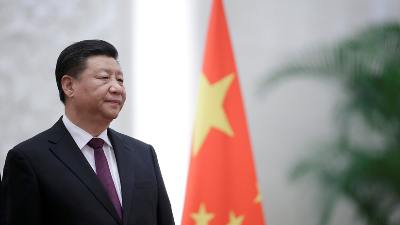

Estaban tardando. Era raro que el Gobierno chino no reaccionara ante el veto a Huawei que ha recrudecido esa guerra comercial entre ambos países.
Esa respuesta acaba de llegar con el anuncio de la creación de una lista de "entidades poco fiables" que puedan dañar los intereses comerciales de las empresas chinas. La decisión podría afectar a multitud de empresas extranjeras, pero se desconoce la magnitud de la decisión ya que no se han detallado el tipo de medidas que se tomarían contra las empresas incluidas en esa lista.
China también tendrá lista negra comercial
El portavoz del Ministerio de Comercio, Gao Feng, explicaba cómo China introducirá un mecanismo en el que estarán incluidas empresas, organizaciones y personas que no obedezcan las reglas del mercado, violen contratos y -aquí la cosa se pone interesante- bloquee, corte el suministro por razones no comerciales o dañe de forma notable los intereses legítimos de las empresas chinas.
Que es precisamente el caso de todas las empresas que han anunciado diversos vetos a Huawei en las últimas semanas. Google, Toshiba, Qualcomm, ARM o Intel son las más destacadas, pero hay muchas más aunque en ciertos casos las empresas y asociaciones han dado marcha atrás y han vuelto a restablecer relaciones comerciales con Huawei.
Gao no daba detalles sobre el tipo de medidas que aplicarían, pero sí indicó que "se tomarán las medidas necesarias" contra las entidades de la lista y que se anunciarían más datos específicos al respecto pronto.
China le devuelve la pelota a EE.UU.
La medida plantearía una situación similar a la que el Gobierno de Trump ha creado con su 'Entity List', que es exactamente lo mismo y que con la inclusión de Huawei ha causado toda esta situación.

Como indican en Bloomberg, los primeros efectos del anuncio ya se han comenzado a sentir en la bolsa estadounidense: las acciones de Apple, Qualcomm o Intel han caído más del 1% antes de que se inicie la jornada bursátil.
El portavoz del Ministerio de Comercio volvía a recordarnos las palabras de Trump cuando aseguraba que esa lista negra china también estará dirigida a empresas que "plantean una amenaza o una potencial amenaza a la seguridad nacional".
Para el Gobierno chino, esta lista "protegerá las reglas de comercio y economía internacional y el sistema de comercio multilateral para oponerse al unilateralismo y el proteccionismo comercial, y para salvaguardar la seguridad nacional y los intereses sociales y públicos de China".
El discurso se une a más y más amenazas de uno y otro país en esta guerra comercial. Estados Unidos está planteando la inclusión en la lista de más empresas chinas -Zhejiang Dahua Technology Co. y Hangzhou Hikvision Digital Technology Co.-, mientras que China prepara un plan para restringir las exportaciones de las tierras raras, materiales imprescindibles en ciertos ámbitos de la electrónica y la tecnología.
Este anuncio vuelve a incrementar la tensión en una guerra comercial que no obstante podría tener solución. Así lo apuntó Donald Trump hace unos días abriendo las puertas a un potencial acuerdo. Dicho acuerdo se podría debatir a finales de junio en la reunión del G-20 que se celebrará en Japón.